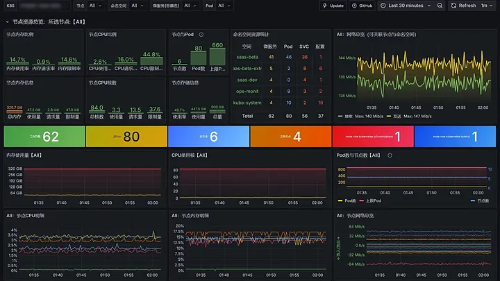

一句话运维 K8S
选定集群即可用自然语言提问，每轮只操作所选集群；统一网关覆盖 63 项 KubeDoor 业务操作与 5 类通用执行器，查询类自动执行。
- K8S API / CRD
- kubectl
- istioctl
- jq · yq · curl · dig · openssl · rg
- Pod exec
例如这个服务最近频繁重启，结合日志、事件和监控帮我找原因
花开堪折直须折，莫待无花空折枝
一个平台统一纳管多套 Kubernetes —— 监控、资源管理、告警事件、高峰期资源治理与准入管控一站搞定；内置可审批、可审计的 AI 运维助手，并以标准 MCP 对外开放。
pods
previous_logs
events
metrics
结论：容器内存长期贴近 limit（512Mi），上次退出原因为 OOMKilled，随后进入 BackOff 反复重启。
| 证据 | 来源 | 结果 |
|---|---|---|
| 上次退出 | pods | OOMKilled · 退出码 137 |
| 退出前日志 | previous_logs | 无应用报错，进程被终止 |
| 内存峰值（6h） | metrics | 约为 limit 的 98% |
| 近期事件 | events | BackOff × 12 |
该命名空间未开启准入控制，建议将内存 limit 调整为 1Gi，需要我提交修改吗？
apiPATCH已完成path: /apis/apps/v1/namespaces/demo/deployments/ deploy-demo-order content_type: application/json-patch+json
--- current+++ proposed "limits": { "cpu": "500m",- "memory": "512Mi"+ "memory": "1Gi"
已按批准时冻结的参数执行，Deployment 开始滚动更新：
| 项目 | 修改前 | 修改后 |
|---|---|---|
| 内存 limit | 512Mi | 1Gi |
稍后可以让我核验新 Pod 的就绪状态与内存曲线。
示意动画 · 工具名与审批流程取自真实实现，数据仅为演示
// 01 · AI 运维助手
在 Web 顶部打开「AI 助手」，选定一个集群，用一句话描述问题。助手自动选择数据来源，联合日志、事件、监控与历史数据定位原因；任何变更都先冻结参数并展示变更预览（K8S API 写入附服务端 Dry-run 差异），默认人工批准后才执行。
选定集群即可用自然语言提问，每轮只操作所选集群；统一网关覆盖 63 项 KubeDoor 业务操作与 5 类通用执行器，查询类自动执行。
例如这个服务最近频繁重启，结合日志、事件和监控帮我找原因
KubeDoor 业务操作与 Pod 内命令展示准确参数和变更预览；通用 K8S API 写入与 kubectl apply 另附服务端 Dry-run 配置差异。批准后按冻结参数原样执行，模型无法偷换。
apiPATCH等待批准path: /apis/autoscaling/v2/namespaces/demo/horizontalpodautoscalers/ deploy-demo-order content_type: application/json-patch+json
--- current+++ proposed "spec": {- "maxReplicas": 4,+ "maxReplicas": 6, "metrics": [
重启、扩缩容、定时 / 周期任务与资源管控优先走 KubeDoor 已验证的接口，覆盖不到才用通用工具，不让模型凭空拼 YAML。
超时或断线导致写入结果未知时，标记「执行结果不确定」，本轮不再执行任何写操作、也不会换通道重试，需先查询实际状态；服务重启也不会重发已派发的操作。
任意兼容 OpenAI Chat Completions、支持工具调用的模型均可接入，含免鉴权的自建模型；DeepSeek 思考模式专项适配，「测试连接」实测工具调用。
在线 Agent 以集群内身份执行，无需上传 kubeconfig；也可上传 kubeconfig（AES-256-GCM 加密保存）直连，Agent 离线照样可用。
入库的资源与 JVM 快照、历史事件与告警，加上实时日志、事件与 VictoriaMetrics 自由 MetricsQL 查询，服务端强制限定当前集群。
会话一键总结为可编辑的经验草稿，审核后存入全局记忆、下一轮按需引入；基于 DeepAgents，内置运维 Skill 与子 Agent 并行调查。
// 安全护栏
// 标准 MCP
同一套工具网关、权限、审批与审计，以标准 MCP 对外开放。外部 MCP 默认开启（ENABLE_MCP="true"），关闭它只会撤掉对外入口，不影响网页里的 AI 助手。
/mcpStreamable HTTP · 推荐/sseSSE · 兼容旧客户端kubedoor_tool 与 Skill 资源 skills://kubedoor-k8s{
"mcpServers": {
"kubedoor": {
"url": "http://<节点IP>:<Web NodePort>/mcp",
"headers": {
"Authorization": "Basic <base64(用户名:密码)>"
}
}
}
}claude mcp add --transport http kubedoor \
http://<节点IP>:<Web NodePort>/mcp \
--header "Authorization: Basic <base64(用户名:密码)>"示例按接口推导，字段名以各客户端文档为准；只支持 SSE 的客户端把地址改为 /sse。生产环境建议为 MCP 单独建账号，并在入口前置 HTTPS。
// 02 · 全栈能力
从监控大屏到准入控制，从实时日志到节点均衡，覆盖 K8S 日常运维的完整链路；其中的查询与运维操作，大多也能直接交给 AI 助手完成。
资源总览大屏汇总各集群的节点、工作负载、Pod 与 PVC，标出风险节点、Top10 异常告警与事件，30 秒自动刷新；另内嵌 K8S、节点与高峰资源三套 Grafana 看板。指标来自内置 VictoriaMetrics，也可对接已有 Prometheus。

Deployment、Pod、Service、Ingress、ConfigMap、StatefulSet、DaemonSet 与节点统一管理，Monaco 在线编辑 YAML，支持批量删除、扩缩容与重启；Istio VirtualService 管理为试用功能。
Deployment 就绪与滚动状态经 K8S Watch 实时推送；Pod 日志实时跟随，异常多色标记、关键字定位，可按容器或整个 Deployment（全部 Pod 聚合）查看，单个 Pod 的完整日志可 gzip 下载。
镜像更新自动列出仓库最近 20 个标签（阿里云 ACR、华为云 SWR、Harbor）；只读账号可按集群、时段与用户授权发布，进度推送 IM。
扩缩容与重启支持立即、定时、周期执行；Pod 一键隔离保留现场，可同时临时扩容、调度到指定节点；支持华为云 CCI 弹性扩容。
内置 44 条告警规则，Pod 告警按日聚合、可标记处理；K8S 事件全量入库并按 JSON 规则告警；指标告警支持 Alertmanager 风格屏蔽（= != =~ !~），命中仍入库留痕。
每天采集业务高峰时段的资源数据，取近 10 天集群 CPU 总消耗最大的一天写入管控表；在「Agent管理」开启「准入控制」后，Deployment 创建与发布时由 Mutating Webhook 按管控表改写副本数和第一个容器的 requests / limits，扩缩容时只改写副本数，让资源申请与真实使用保持一致。
采集并管控 Xms、Xmx、Xss、MaxMetaspaceSize，开启准入控制后在下次发布或重启时替换已有参数；展示堆与 G1 Eden 使用率，一键 Dump、Jstack、JFR。
按节点 CPU 极差判断失衡，迭代生成迁移计划（整体标准差下降才采纳），分批隔离式迁移并轮询新 Pod 就绪；手动触发，需 metrics-server。
nginx basic auth 登录，读写与只读账号分离，只读账号仅开放查询接口（改镜像按 UPDATE_IMAGE_JSON 授权放行）；访问日志记录操作账号，AI 操作的参数、审批与结果全部入库。
// 03 · 架构
控制端与集群端可以装在同一个集群（单集群场景），也可以分开部署，纳管任意多套 Kubernetes。
每个业务集群的 kubedoor-agent 主动以 WebSocket 连接 master（同集群走 Service，跨集群经 Web 入口并带 basic auth），控制端默认无需反向访问业务集群（仅 AI 的 kubeconfig 直连会从控制端访问 API Server）。
管控配置、高峰资源、K8S 事件、告警记录、Istio 路由与 AI 会话都存在 PostgreSQL 原生表，不依赖扩展；启动自动建表，事件、告警与高峰快照按保留天数每天清理。
时序库必需（Deployment 列表、资源总览与高峰采集都依赖它）：可一并部署 VictoriaMetrics、vmalert、Alertmanager 与 Grafana，也可对接已有 Prometheus / VictoriaMetrics，各集群指标需能从同一地址查到并带标签 <PROM_K8S_TAG_KEY>=<K8S_NAME>。
kubedoor-ai 同时服务 Web 助手与外部 MCP，统一经 Web nginx 认证，共享工具网关、权限、审批与审计，服务本身不单独对外暴露。
// 04 · 界面一览
点击截图查看大图，可用 ← / → 键或左右滑动切换，Esc 关闭。点击截图查看大图，左右滑动切换。
截图来自真实环境，集群名、IP、域名等已遮挡；标注 1.x 的为早期界面，细节以当前版本为准。
// 05 · 三步部署
一份配置文件 + 一个 bash 脚本完成部署，不再需要 Helm。PostgreSQL 独立运行在 K8S 之外，也可以直接使用现成的数据库。
在一台 K8S 节点能访问到的机器上用 docker compose 启动 PostgreSQL。无需手动建表，master 与 kubedoor-ai 启动时会自动建表。
git clone \
https://github.com/CassInfra/KubeDoor.git
cd KubeDoor/deploy/postgres
cp .env.example .env
# 至少改掉 PG_PASSWORD
vi .env
docker compose up -dPG_HOST 要填 K8S 里的 Pod 能访问到的地址（不能是 127.0.0.1）。装完会打印 Web 控制台地址与默认账号 kubedoor / kubedoor；WEB_AUTH_USERS 里还预置了一个供跨集群 Agent 使用的读写账号，两个默认账号的密码都已公开，上线前请全部修改（跨集群 MASTER_WS 里的账号同步替换）。
# 与数据库不在同一台机器时，先在这里 git clone 仓库
cd KubeDoor/deploy
# 从模板复制一份配置，再改 PG_HOST / PG_PASSWORD / MSG_TOKEN 等
cp kubedoor.conf.example kubedoor.conf
vi kubedoor.conf
./install.sh master到每个业务集群执行。K8S_NAME 是集群唯一标识；同集群 MASTER_WS 填 ws://kubedoor-master.kubedoor，跨集群填 ws://<账号>:<口令>@<控制端节点IP>:<Web NodePort>，账号必须是 WEB_RW_USERS 里的读写账号（装控制端后脚本会打印这一行），还要把 REMOTE_WRITE_URL 改成控制端时序库的外部地址（用内置 VictoriaMetrics 时同样会打印）。
# 改 K8S_NAME 和 MASTER_WS（跨集群再改 REMOTE_WRITE_URL）；换机器执行时先从 kubedoor.conf.example 复制
vi kubedoor.conf
./install.sh agent./install.sh render master -o /tmp/out 只渲染 YAML 不部署，适合改完配置后先 review；./install.sh status 查看部署状态。
2.x 的数据库已从 ClickHouse / MySQL 换成 PostgreSQL，旧版 Helm chart 不能与新代码混用，旧数据也不能直接沿用。请先在旧版「Agent管理」关闭「准入控制」，再 helm uninstall 旧版本，然后按全新安装部署。
已有 Prometheus / VictoriaMetrics、离线内网、调整登录账号等，见 完整部署文档。
// 06 · 版本演进
Web 内置 AI 助手（审批、Dry-run 差异、全局记忆、kubeconfig 加密直连）；外部 MCP 并入 kubedoor-ai，新增 Streamable HTTP 入口并接入读写权限与浏览器审批；Deployment 实时状态推送；JVM 启动参数管控与高峰期堆、G1 Eden 使用率。
移除 ClickHouse / MySQL，统一使用 PostgreSQL；install.sh 取代 Helm；新增告警屏蔽、节点负载均衡、华为云 CCI 弹性扩容与 Pod 日志下载。
多集群资源总览大屏：风险节点、最高使用率、Top10 异常 Pod 告警与 K8S 事件、近 10 日告警趋势；重构 Agent 架构，增加接口缓存与分页。
Deployment、Pod、Service、Ingress、ConfigMap、StatefulSet、DaemonSet、节点与 Istio 的增删改查及批量操作。
K8S 事件采集分析与规则告警；镜像更新自动获取标签，并可按账号、时段授权；Istio VirtualService 管理与同步（试用）；新增 Slack 通知与暗黑模式。
Pod 实时日志跟踪，支持关键字定位与过滤；优化高峰期资源采集算法。
首次以 MCP 接入大模型客户端，用对话方式操作 K8S 集群。
1.0 起改为多 K8S 集群统一管控架构（统一监控、告警聚合、高峰期资源管控）；1.1 基于 K8S 准入控制，让微服务 Pod 数、需求值、限制值与高峰资源保持一致。
以基于 K8S 准入控制的微服务资源管控平台在 GitHub 开源，聚焦每日高峰时段的资源；同月 0.3.0 加入多 K8S 集群统一监控、告警与通知。
// 07 · 文档与社区
特别鸣谢 CassTime 开思：KubeDoor 的诞生离不开开思的支持。
也感谢 Python、AIOHTTP、Vue、Pure Admin、Element Plus、Kubernetes、VictoriaMetrics、Grafana、PostgreSQL、Nginx、DeepAgents 等优秀的开源项目。